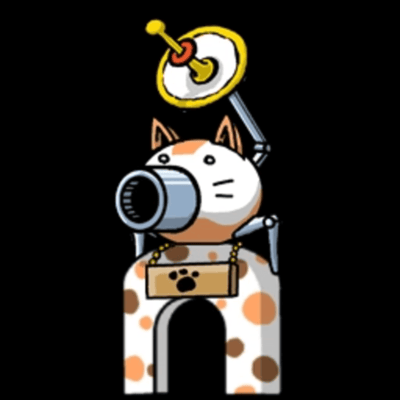

The Cat Base
This is a little bit about the Cat Base.
The Cat Base (not to be confused with the Cat Base Mini) is the player's base in The Battle Cats. The Cat Base appears during battle and is found on the right side of the screen.
- Cat Units that are deployed during a battle will spawn from the Cat Base. The Cat Base has a limited amount of health. By default, the Cat Base has 1,000 health.
- If an enemy gets too close to the base, the enemy can harm the base and lower its' HP. If the Cat Base's HP reaches 0, the player loses.
- Sniper the Cat's damage scales on 5% of the base's HP.
- The Cat Base's health can be increased by leveling up Cat Base Health in the Upgrade Menu, obtaining certain Treasures, activating Cat Base Defense Up Cat Combos, or by upgrading the default Cat Base at Ototo Development Team. With all these upgrades (2x Base Defense Up M, all treasures), the base can reach up to 472,000 HP.
- The Cat Base has a cannon that can fire a beam that deals damage to troops in a designated range. The Cat Cannon can be upgraded using materials found within Stories of Legend, Uncanny Legends, Zero Legends and some other stages.
Below are the different variations of the Cat Cannon.
BACK HOME